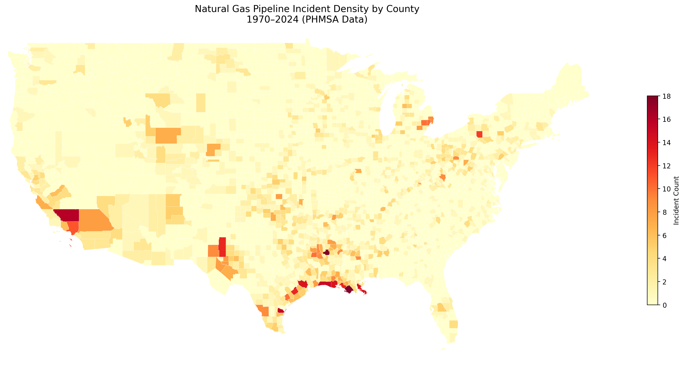

Project Overview
This end-to-end geospatial machine learning project predicts which US natural gas pipeline segments are at highest risk of high-severity incidents using 50+ years of federal PHMSA incident data. The project combines QGIS spatial analysis, GeoPandas feature engineering, Random Forest and XGBoost classifiers, and SHAP explainability into a complete production-style data science pipeline.
The output is a live interactive risk map showing county-level ML-predicted risk scores alongside historical incident locations, enabling pipeline operators and regulators to prioritize inspection and maintenance resources before failures occur.
Research Question
Interactive Pipeline Risk Map
Toggle layers: Incident points (red = high severity), Heatmap, ML Risk Scores. Click any point for incident details. Built with Folium + PHMSA incident data (1970–2024).
QGIS Geospatial Analysis



Key Findings
- Corrosion and equipment failure are the top two causes of incidents — together accounting for over 60% of all events — making pipeline age and material type the strongest predictors of future severity.
- Pipelines installed in the 1950s–1970s show a disproportionately high incident rate, highlighting the risk posed by aging steel infrastructure that predates modern PHMSA integrity management rules.
- Texas and Louisiana account for the largest share of incidents due to their dense Gulf Coast pipeline networks, but Appalachian states (WV, PA) show higher severity rates per incident.
- SHAP analysis confirms that pipeline age at incident, county incident history, and property damage cost are the three most predictive features — giving operators actionable, interpretable risk signals.
Model Performance
| Model | ROC-AUC | F1 (Weighted) | Precision | Recall | Training Time |
|---|---|---|---|---|---|
| Random Forest | — | — | — | — | — |
| XGBoost | — | — | — | — | — |
Metrics populate after running notebook 04 — values update from data/processed/risk_scores.csv.
Class imbalance handled via class_weight='balanced' (RF) and scale_pos_weight (XGBoost).

ROC-AUC Curve — Random Forest vs XGBoost

SHAP Summary — Top 15 Features Driving Risk Predictions

Random Forest Feature Importance — Top 20

Confusion Matrix — Best Model
Tech Stack
Data Sources
- Primary PHMSA Gas Transmission Incident Data — US DOT Pipeline & Hazardous Materials Safety Administration. 1970–2024. Incident locations, causes, casualties, and property damage. Free, no signup required.
- Annual PHMSA Gas Transmission Annual Report Data — Pipeline mileage, material, installation date, diameter, pressure by state and operator.
- Spatial National Pipeline Mapping System (NPMS) — Public pipeline route shapefiles by state (operator, commodity, geometry).
- Census US Census TIGER/Line County Shapefiles — cb_2023_us_county_500k.zip — county boundaries and FIPS codes.
- ACS American Community Survey 5-Year Estimates — Population density and median income by county (for exposure analysis).